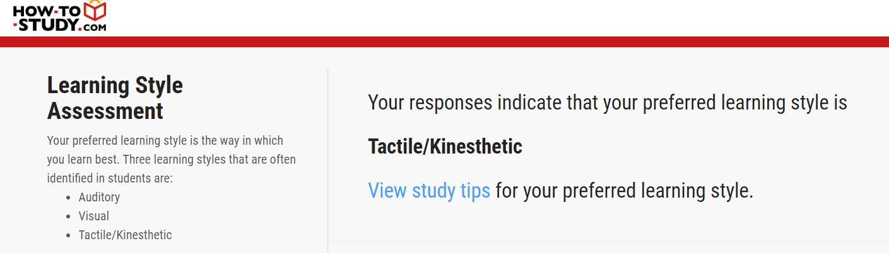

My Profile
About me
Name: Daniel Mammone
Email: S123456@student.rmit.edu.au
Age: 26
State: Victoria
Nationality: Italian
Education to date: Year 12 and Certificate III in automotive sales
Languages spoken: English
Hobbies and favourite pastimes: Playing video games, watching tv shows, going to live gigs and working on my cars
My interest and history in IT
I've been interested in IT since a very young age. It started with video games on my aunties PC (windows 95!) they seemed like magic to me and eventually I wanted to to know how they worked, so unfortunatly her computer bore the grunt of my experements. Eg, what happenes if I delete this? or what happens if I unplug that? eventually it got to the point where it stopped working haha. since then I've always loved tinkering with computers and have built several for myself and my friends and family. I'd love to one day get a job in cybersecurity or become a network engineer
Why have I chosen to study at RMIT?
I chose to study online at RMIT because I work full time and need the flexability of being able to watch the lectures in my own time.
What do I expect to learn during my studies?
Ideally I'd like to learn the fundementals so that I can progress further into uni and complete either a Degree in Cybersecurity or network engineering.
My ideal job Network Architect

What is a network architect?
A network architect is also known as a network engineer. Their primary role is to design and build computer network systems for small and large busnesses. They also maintain the networks once they're established.
Job position
This is a job for someone with many years of experience as a network architect.
Skills, qualifications and experience required.
This Job requires five or more years of experience as a network architect. You will also require a solid unterstanding of Cisco Technologies like, switchboards and routers. A good working knowledge of public cloud platforms like AWS and Azure. Experience working with VMware is required. Finally you need some experience working with the latest and greatest technologies and applications.
Experience I have relitive to this job.
Right now the only experience I have that is remotely similar is that I know what a router and a switch is. I also work at a company that uses VMware, so I know how to use its remote desktop functionality.
How will I obtain the knowledge to be able to apply for a role like this?
I will study at University and complete a degree in network architecture/engineering, I will then have to find a post-graduate job and gain real world experience for at least five years before I can apply. Clearly I will need to know more than being able to build a standalone PC.
Personality tests
Click here for my big five test 
My interpretation.
These three tests should be taken with a grain of salt because they are free versions and not 100% acurate. However my big five results state that I'm a friendy and optimistic person who is careful and diligent. I also tend to stick to the proven method and will tend to not try new methods of solving problems. My learning style is Tactile/Kinesthetic so that means I'm a physical learner and learn best whilst workig with my hands, like typing on a keyboard or physically putting things together. I'ts also helpful if I take short breaks every so often to move about and refresh.